配管マスターへの道（水流設計編）
配管マスターへの道（水流設計編）
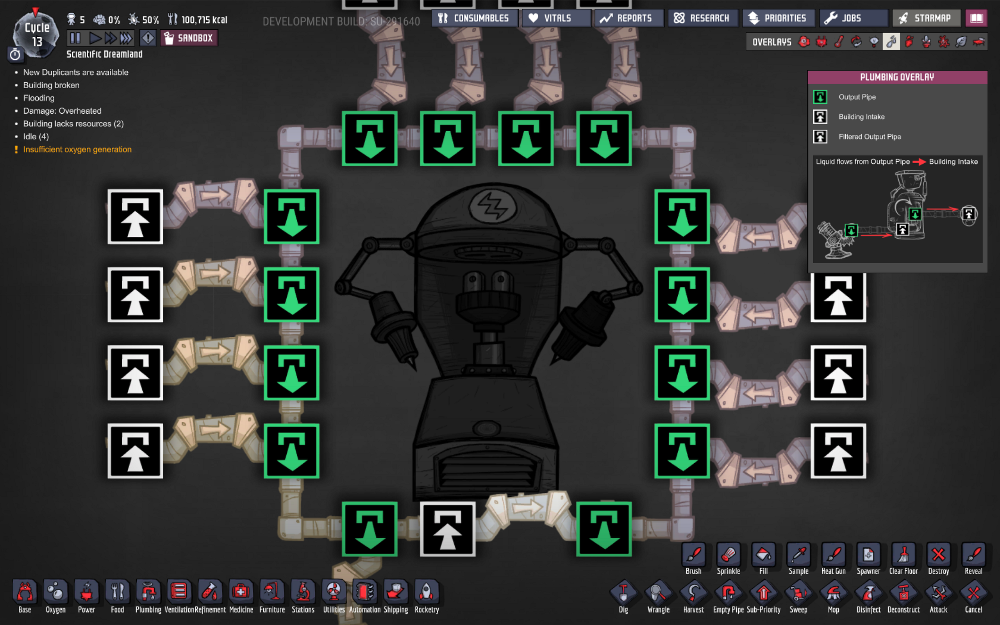
ゲーム序盤は比較的シンプルな配管のみで液体を移動できるが、中盤になると様々な分岐や結合が生まれてくることになるが、その際うまく配管を行わないと水流が止まったり逆流したりと意図しない挙動となることがある。今回はそれらを防ぐための手法について考える。
なお、前の記事と同じく、本記事で表記を統一するために特段明記しない限りすべて液体を扱ってるものとするが、気体でも基本は一緒である。
Oxygen Not Includedにおいて、ゲーム中盤で加速度的に難易度が増してくるのが、気体・液体を目的への場所へと運ぶための配管だ。本記事では配管を正しく、そして効率よく設置するための情報をまとめる。medium.com
大原則
まず身も蓋もないかもしれないが、大原則を先に伝える。
シンプルな配管に勝るものはない。
分岐・結合は可能な限りしない。出発点から目的地まで一直線に流れる配管こそが最も効率がよい。
なので、ゲーム中盤にさしかかったときには、必要と感じたら、正しくシンプルな配管に付け替える勇気が必要だ。
とはいえ、そう言ってもどうしても色々必要な場合もある。シンプルな配管ができない場合について次から考えていく。
パイプによる結合
まず最もシンプルな結合である、ブリッジを使わずに通常パイプのみで複数のパイプからの流入を結合する場合を考える。
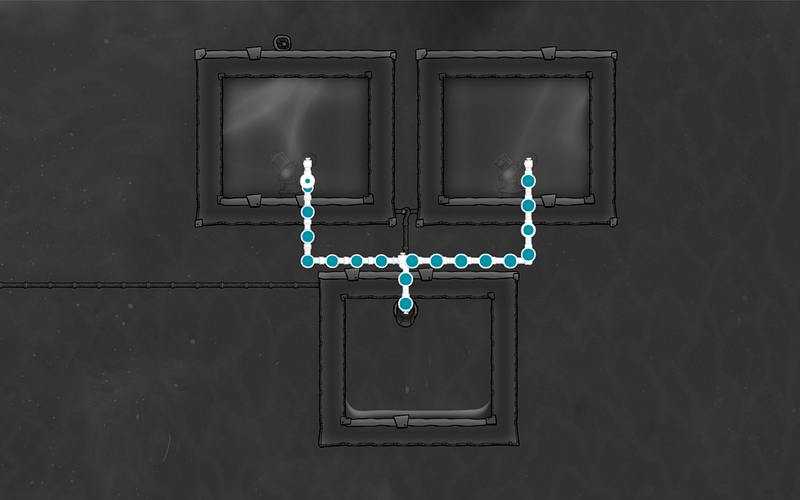
この設計の場合、基本それぞれのパイプからの流入物が交互に排出されていく動きになる。上記の画像の場合は、右、左、右、左という感じになるはずだ。
ただ、流入してくる液体の種類が同じという場合と異なる場合で微妙に挙動がかわる。
液体の種類が同じ場合、合流地点のその管の最大流量に達するまで液体が順番に合流していく。液体の種類が違う場合、このゲームで液体は混ざることがないので、それぞれが交互に排出されていく。
ここで注意したいのは、片方から10kgずつ、もう片方から100kgずつ排出されてきたものが合流する場合、10kg、100kg、10kg、100kgの内容物になるということ。要は効率はよくない。
排出口、取り込み口の位置関係
前述の合流は、あくまで他のすべての条件が正しく設定されている場合のみである。
というとも、ブリッジによる分岐・結合、そしてポンプ等の機器に接続する場合、白（取り込み口）と緑（排出口）が存在するわけだが、パイプに対してこれらがどのような配置になっているかによっては正しく液体が流れないからだ。
基本ルールは二つ：
- 排出口からパイプに入った液体は取り込み口に向かって流れようとする
- 連続するパイプ群において、全ての排出口から見て一つの方向にしか取り込み口がないようにしないと水流が止まる
と、言ってもわかりにくいと思うので、具体例を見ていこう。
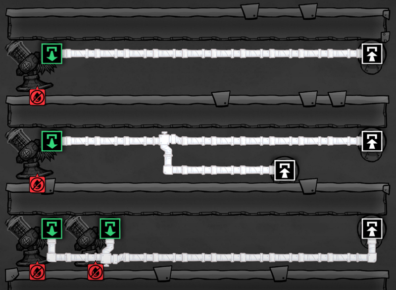
これらはどれも当然動く。
だが、ここで気をつけてみてほしいのは、排出口から取り込み口までの経路はどの排水口からみても同じ方向ということである。
例えば、一番下の二個ポンプがつながっている例。
一見複数の排水口があっておかしなことになりそうに見えていても、どちらの排水口から見ても、取り込み口に向かう方向は同じく右側であるだ。
このように水流の方向が一定の方向に一意に決定できるときは効率の問題があったとしても、必ず動作する。
ところが以下の例ではひとつの排水口から、左右どちらに行っても取り込み口が存在する。
これだと水流がどちらに行くのかわからなくなってしまい、水が流れない。
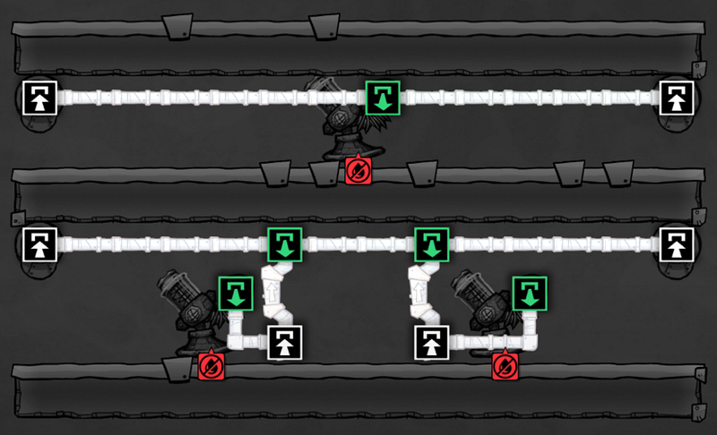
上記の例を見てもわかるように、排出口・取り込み口はそれがポンプであっても、ブリッジであっても、動作は同じである。どれも水流の方向を決定づけることができる組み立てをする必要がある。
パイプ結合の原則パターン
以上をふまえた上で、パイプを結合する際の大原則は以下の通り
- 全体の大きい流れが一定方向に向かうようにする（例：「このパイプ群は時計回りに液体を流す」と決める）
- 連続する通常パイプの先端と終端がそれぞれ排水口のみか、取り込み口のみ、という構成にする
この原則を頭にいれつつ反時計回りに流れるループ配管の設計を考えてみる。
まず、何も考えずに環状にパイプを連結してみる。
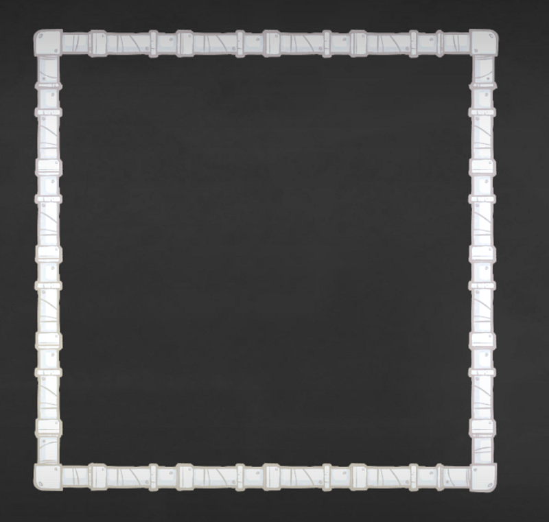
そこに左右からパイプを結合していく。
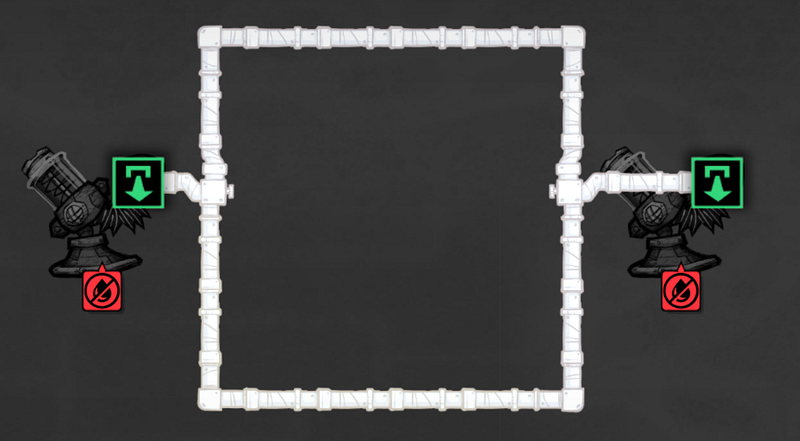
この作りの場合、それぞれの排水口から分岐点までは一意に水流の方向を決定できるが、そこから先には排出口がないのでどうにもできない。第一、我々はループさせたいのだ。排出口は基本いらない。
ではここで水流を発生させるにはどうするか？簡単である。連続する通常パイプをぶった切って、先端と終端を作ってやればよい。
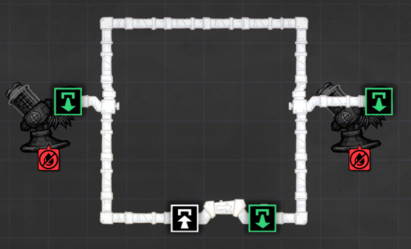
ブリッジの右側が排水口その１、そして反時計回りに右ポンプからの排水口、左ポンプの排水口と続き、同じブリッジの取り込み口、という流れができた。これで反時計回りの水流が生まれる。
基本、パイプを結合して水流が発生しない、という場合はこのようなこのような環状の流れ（ループしているかどうか、ではなく、全体の流れが、という意味）ではなく、木のように複雑に枝分かれしている形になっているはずだ。
なので、
- まずその流れを整理して、環状に、一定方向に液体を流れ指すことが可能か考える
- その上で、ひとつのパイプ群の中で先端に排水口、終端に取り込み口をつける
そんな形にすれば自然と水流が発生するはずだ。例えば以下の例なら、
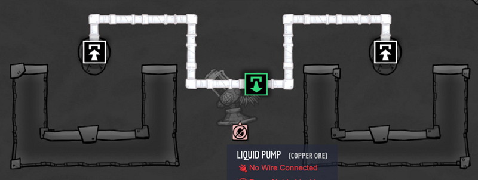
以下のように反時計回りの設計にしてしまうのはひとつの解だ。
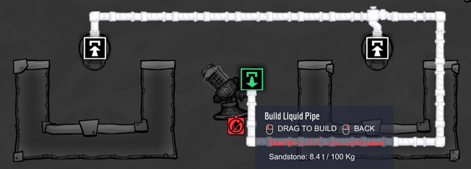
ここに結合が発生する場合は、必ず最初の取り込み口の「前」に結合する。
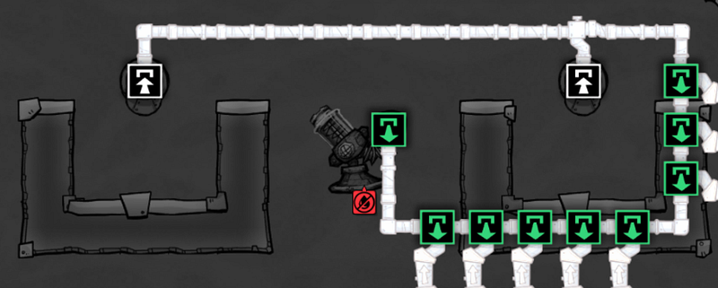
すると、なんと↑こんなアホみたいな配管でも動作する。
どうしても取り込み口の後に結合したい場合はブリッジでパイプを区切って、先端を作ってしまう。
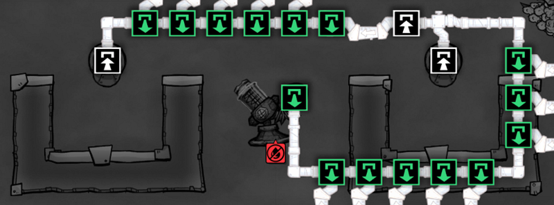
こうすると、論理的にパイプ群が最初の取り込み口（＋ブリッジ）までの流れ、とブリッジから二つ目の取り込み口までの2群に分けられ、それぞれの中で先端と終端が自明なので水流が生まれる。